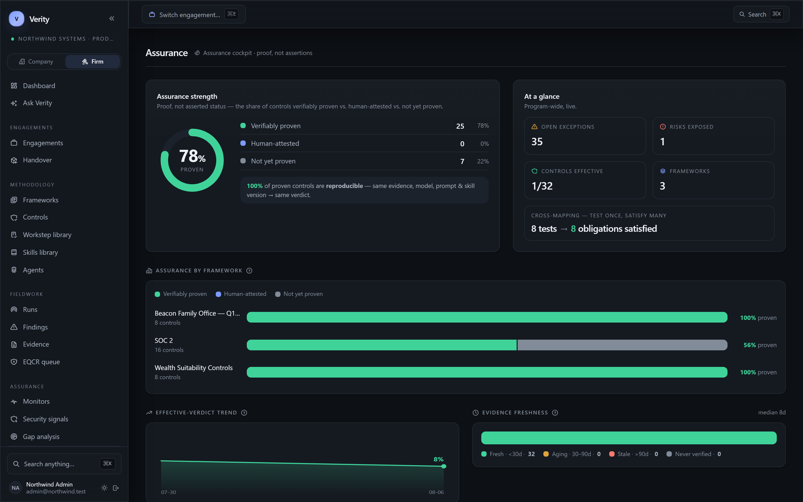

Live control testing
Watch reasoning stream in real time as the agent works a control end to end.
Verity's autonomous agents test your controls against real evidence, cite every claim to the exact quote, and seal each verdict as reproducible, signed proof — the kind auditors accept without redoing the work. No hallucinations. No opaque verdicts. No checkbox theater.
Audit prep eats 60–80% of a compliance team's time. The tools meant to help run hourly polls, hide their logic, and make language models do arithmetic — then ask you to trust the answer.
"Continuous monitoring" that polls a few times a day. Drift hides in the gaps between checks.
A red or green dot with no trace. Auditors re-verify everything by hand — 20+ minutes per finding.
Bolt an LLM onto a pre-LLM engine and let it count users. Hallucinated numbers become "evidence."
The agent reads the control's versioned methodology — auditable markdown, not a black box — and lays out exactly what it will check.
It pulls live state from AWS, GitHub and your policy docs through MCP connectors. Every value comes from a tool call, never a guess.
The math runs in code, not in the model. Counts, comparisons and thresholds are computed and reproducible.
Every assertion ships with an exact quote, page and section — validated by string match. The trace is the product.
Incumbents draw boxes colored by an asserted pass or fail. Verity renders the same graph — but every node carries a verifiable verdict, its cited evidence, and how fresh it is. Trace down to the exact proof, or up to everything a failure puts at risk.
Follow a framework requirement to the control, the exact test, the failing rows, and the cited line of evidence — reproducible offline at /verify. Lineage that ends in proof, not a checkmark.
When a control fails or evidence goes stale, see exactly what it un-proves — which risks are now exposed, which frameworks lose coverage, which processes are affected.
Every node knows when it was last proven and whether it still reproduces. Stale assurance is flagged as stale — never quietly shown as green.
Real screenshots from a live Verity workspace — populated with real controls, real evidence and real cited verdicts.

Proof, not assertions — every control shown as verifiable proof, broken out by framework, with a live effective-verdict trend and evidence freshness.
When Verity asserts a fact about your environment, it includes the exact source — quote, page, section — and verifies the quote actually appears in the document. If it can't be grounded, it isn't claimed.
Verity's color system is strict and never overloaded — so a glance tells you exactly where you stand.
The control operates as designed, proven against current evidence.
A gap is proven, with the exact failing evidence cited inline.
Evidence is too old or inconclusive to stand behind. Flagged, never faked.
Context the reviewer should see — without a pass/fail judgment.
Each finding is filtered through five independent checks before a human ever sees it. The target: under 20% of verdicts need human review — and the ones that do are the genuinely hard calls.
Output must match the contract before anything else runs.
Every quote is string-matched back to its source document.
All math runs in code — counts, thresholds, comparisons.
A second model tries to refute the verdict before it stands.
Only the genuine residue reaches a person — fully traced.
Watch reasoning stream in real time as the agent works a control end to end.
Egress-only connectors for AWS, GitHub & GCP today — plus uploaded populations you attest as complete; Okta, Jira & ServiceNow next.
Severity, ownership, due dates and tracking — each finding anchored to its evidence.
Every completed run assembles a defensible audit workpaper — objective, procedures, evidence, exceptions, conclusion. Firm-mode engagements add the EQCR sign-off chain and roll-forward.
Test every row of the population, not a sample — and name every exception. "6 of 24 accounts breached the 20% limit," each with the value that failed.
Every verdict is a reproducible, cryptographically signed attestation — anyone can re-check it offline at /verify, no account required.
"Which production users lack MFA?" — conversational queries answered from live state.
Claude, GPT, DeepSeek, Bedrock or self-hosted vLLM. Route per tenant. No lock-in.
A live dashboard of posture, coverage, trend and evidence freshness — plus one-click reports leadership can read and auditors can defend.
Assemble controls from reusable worksteps, skills and bounded agents — your firm's methodology as versioned, auditable code, with human sign-off enforced where it matters.
A full RCM spine — risks, policies, vendors, people and devices — each wired to the controls that mitigate it and the evidence that proves it.
Publish a verifiable posture page prospects can check themselves — every claim backed by a signed attestation, no NDA and no spreadsheet.
The same verifiable engine, pointed at two jobs. A company runs its own compliance; an audit firm tests its clients. Both work from the same cited, reproducible proof — so the handoff between them stops being a re-audit.
Own your posture across every framework — and prove it.
Run a controls engagement in hours, not days — and defend every conclusion.
The company proves it once. The firm starts from that proof. Every verified control becomes shared, re-checkable ground — the trust network compliance never had.
Test once, satisfy many. One automated test settles the equivalent control in every framework that shares its evidence — SOC 2, ISO 27001, NIST CSF and PCI DSS at once — and the same engine now governs AI systems under ISO 42001 and the EU AI Act.
The full 16-control trust-services programme, from MFA to change management — each tested per-item against real evidence.
Annex A control coverage reusing the same checkers and citation discipline — cross-mapped, so one test credits both.
Identify · Protect · Detect · Respond · Recover, mapped to your live posture.
Cardholder-data controls with the same defensible, cited verdicts.
Verifiable AI-management-system controls — govern your models the way you govern everything else, with proof.
Test AI-system obligations against real evidence, deterministically — smarter GRC with AI, safer AI with GRC.
The engine isn't hard-wired to security frameworks. Author any control against any evidence you can cite — and it inherits the same per-item testing, citations and signed proof. Teams already run it for wealth-management suitability, testing every client portfolio against its investment policy.
Cut audit prep from weeks to days. Stop living in spreadsheets and email — let the agent gather and organize the evidence.
Upload a client's population, test every row, and hand your reviewer a signed, cited workpaper they'll accept — with the EQCR sign-off chain built in. Cut a controls-testing engagement from days to hours.
Review a verdict in ~90 seconds instead of 20+ minutes. The reasoning and citations are already on the page.
One source of truth across frameworks, with board-ready posture you can actually stand behind.
Watch the full reasoning trace stream live, with citations you can click and verdicts you can defend.
No checkbox compliance. No black boxes. Just the truth, cited.